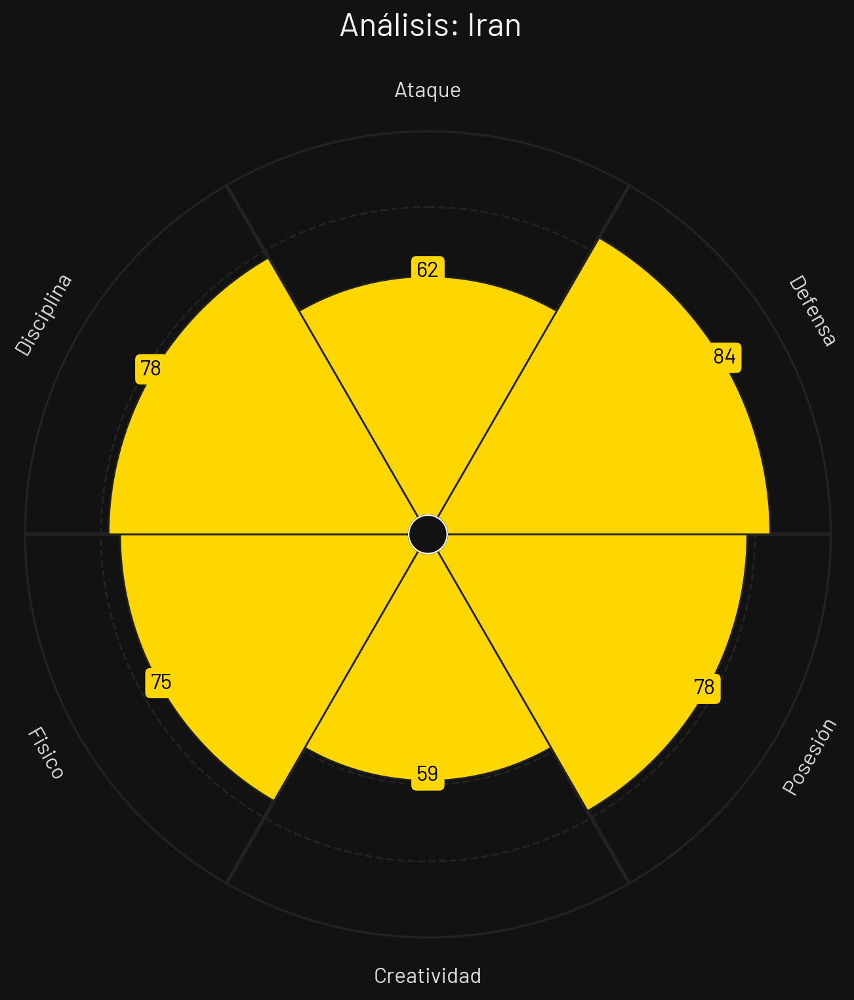
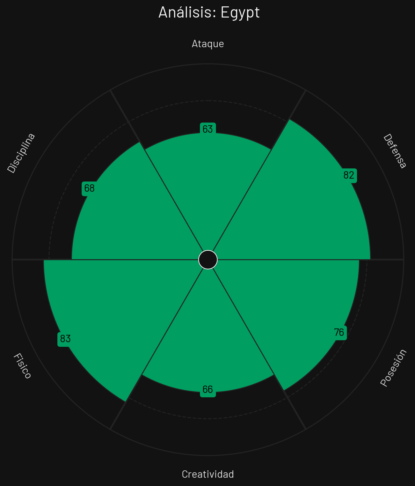
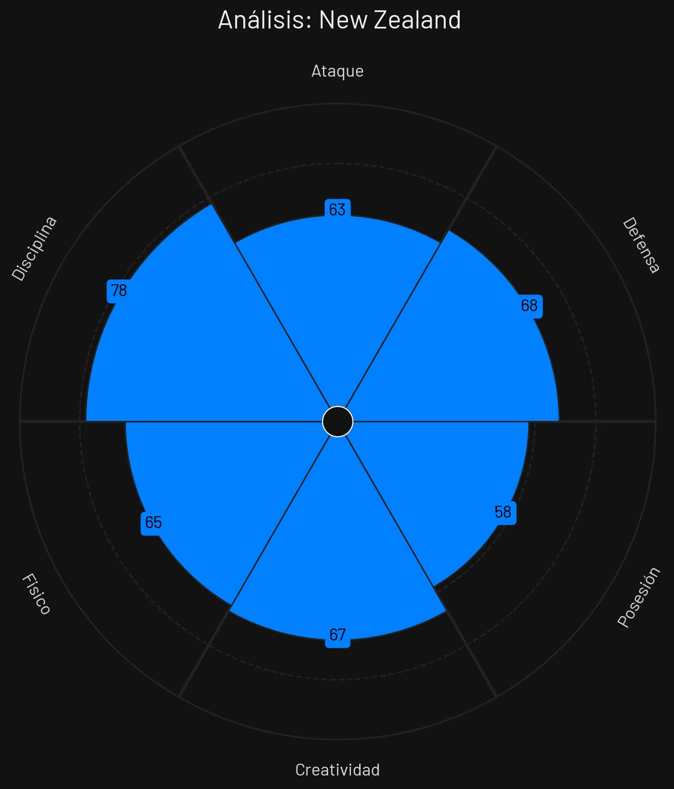

🏆 Tabla de Posiciones
| Pos | Equipo | PJ | G | E | P | GF | GC | DG | Pts |
|---|---|---|---|---|---|---|---|---|---|
| 1 |
 Bélgica
Bélgica
|
3 | 1 | 2 | 0 | 6 | 2 | 4 | 5 |
| 2 |
 Egipto
Egipto
|
3 | 1 | 2 | 0 | 5 | 3 | 2 | 5 |
| 3 |
 Irán
Irán
|
3 | 0 | 3 | 0 | 3 | 3 | 0 | 3 |
| 4 |
 Nueva Zelanda
Nueva Zelanda
|
3 | 0 | 1 | 2 | 4 | 10 | -6 | 1 |
Bélgica

Estilo de Juego e Influencia
Posesión progresiva con pases filtrados en el último tercio por De Bruyne, sobrecarga interior y amplitud exterior.
- Formación Base: 4-3-3 / 3-4-2-1
- xG Promedio: 1.95 por 90 min
- Zona de Presión: Bloque Alto (PPDA 8.5)
- Jugador Clave: Kevin De Bruyne
Irán

Estilo de Juego e Influencia
Estructura defensiva compacta organizada, transiciones verticales con pocos toques y duelos físicos agresivos.
- Formación Base: 4-4-2
- xG Promedio: 1.42 por 90 min
- Zona de Presión: Bloque Medio-Bajo (PPDA 11.0)
- Jugador Clave: Mehdi Taremi
Egipto

Estilo de Juego e Influencia
Repliegue defensivo ordenado y contraataques rápidos explotando la velocidad de Salah por banda derecha.
- Formación Base: 4-3-3
- xG Promedio: 1.30 por 90 min
- Zona de Presión: Bloque Medio-Bajo (PPDA 11.5)
- Jugador Clave: Mohamed Salah
Nueva Zelanda

Estilo de Juego e Influencia
Defensa baja en bloque defensivo cerrado, marcas de cobertura estricta y juego directo buscando centros para Wood.
- Formación Base: 5-4-1
- xG Promedio: 0.88 por 90 min
- Zona de Presión: Bloque Bajo (PPDA 13.0)
- Jugador Clave: Chris Wood
Análisis Técnico: Grupo G - Mundial 2026
Basándome en los perfiles tácticos proporcionados, presento un análisis técnico detallado de los equipos del Grupo G:
📊 Comparativa General de Atributos
| Atributo | ||||
|---|---|---|---|---|
| Ataque | 92 | 62 | 63 | 63 |
| Defensa | 85 | 84 | 82 | 68 |
| Posesión | 93 | 78 | 76 | 58 |
| Creatividad | 83 | 59 | 66 | 67 |
| Físico | 80 | 75 | 83 | 65 |
| Disciplina | 69 | 78 | 68 | 78 |
🔍 Análisis por Equipo
BÉLGICA
Fortalezas
- Creatividad de De Bruyne (88): Capacidad única para filtrar pases de gol.
- Ataque por Bandas (82): Extremos rápidos que ganan el fondo.
- Posesión Ofensiva (80): Dominio de ritmo en campo rival.
Debilidades
- Defensa contra Contraataques (73): Zaga central lenta frente a transiciones directas.
Estrategia: Alimentar constantemente a De Bruyne en zona 14, mover la defensa rival con pasadas de laterales y buscar remate rápido.
IRÁN
Fortalezas
- Defensa Compacta (82): Gran resistencia posicional grupal.
- Pegada de Taremi (79): Delantero oportunista con gran definición.
- Intensidad Física (78): Fuerte despliegue en marca.
Debilidades
- Juego Asociativo Largo (66): Tienden a ceder totalmente la posesión del esférico.
Estrategia: Resistir ordenados atrás, recuperar en mediocampo y buscar de inmediato a Taremi con balones frontales directos.
EGIPTO
Fortalezas
- Peligro de Salah (85): Estrella desequilibrante en banda derecha.
- Bloque Bajo Firme (76): Defensa acumulada difícil de superar.
- Velocidad de Contra (77): Transición letal con espacios abiertos.
Debilidades
- Salah-Dependencia (70): Falta de variantes si neutralizan a su estrella.
Estrategia: Esperar replegados en 4-4-2 en campo propio, recuperar y lanzar pases largos a la carrera de Salah.
NUEVA ZELANDA
Fortalezas
- Juego Aéreo con Wood (81): Peligro constante en balones altos.
- Línea de 5 Defensiva (75): Mucha densidad de hombres en área chica.
- Rigor Táctico (73): Apego al plan defensivo cerrado.
Debilidades
- Velocidad de Giro (61): Centrales corpulentos pero lentos en giros.
- xG sin Balón Parado (57): Dificultades para generar juego combinativo.
Estrategia: Defender en área propia bloqueando tiros, buscar faltas tácticas ofensivas y enviar centros al área.
⚔️ Matchups Clave
🏆 Proyección del Grupo
Clasificación Esperada:
🧠 Análisis Táctico Avanzado
A continuación, se presenta un análisis técnico y cuantitativo del **Grupo G** para el Mundial de Fútbol 2026, evaluando las virtudes, debilidades y el enfoque estratégico de cada selección a partir de sus perfiles estadísticos.
🔍 Análisis Perfil por Perfil
1. Bélgica
Al examinar el archivo `PerfilTacticoBelgica.png`, la selección europea se consolida como el rival a vencer y el gigante estadístico indiscutible del grupo, mostrando un fútbol asociativo y dominante.
- Fortaleza principal: Un dominio abrumador del control de juego (93 en Posesión) y un arsenal ofensivo temible (92 en Ataque), respaldados por una gran dosis de inventiva (83 en Creatividad) y solvencia posterior (85 en Defensa).
- Área de mejora: El control emocional en momentos de alta tensión. Su registro de 69 en Disciplina indica cierta propensión a cometer faltas tácticas o a desordenarse si la circulación no fluye adecuadamente.
2. Egipto
De acuerdo con los datos del archivo `PerfilTacticoEgipto.png`, el conjunto africano presenta un perfil netamente competitivo enfocado en el desgaste y la solidez colectiva.
- Fortaleza principal: Una excelente respuesta física (83 en Físico) que apuntala un bloque defensivo sumamente rocoso (82). Es un equipo equilibrado en el manejo de los tiempos (76 en Posesión) que busca asfixiar el espacio al rival.
- Área de mejora: La contendencia y finalización. Su baja métrica en Ataque (63) demuestra una dependencia excesiva de jugadas aisladas o individualidades para inclinar la balanza en el marcador.
3. Irán
El desglose del archivo `PerfilTacticoIran.png` revela una propuesta profundamente pragmática, orientada a blindar la portería y mantener las líneas compactas.
- Fortaleza principal: Una retaguardia de élite (84 en Defensa) coordinada a través de un impecable orden táctico (78 en Disciplina) y un respetable control del balón para enfriar los encuentros (78 en Posesión).
- Área de mejora: La generación de juego. Un escaso 59 en Creatividad —la puntuación más baja del sector— los define como un bloque predecible si se ven obligados a proponer ataques posicionales o a remontar un marcador adverso.
4. Nueva Zelanda
Al analizar el archivo `PerfilTacticoNuevaZelanda.png`, el combinado oceánico se planta en el torneo como el equipo con menores recursos técnicos, lo que les obligará a apelar a la concentración colectiva.
- Fortaleza principal: Su nivel de orden y juego limpio (78 en Disciplina), igualando a Irán como los más correctos del grupo. Asimismo, mantienen una regularidad aceptable en su última línea (68 en Defensa).
- Área de mejora: La circulación y el volumen de juego. Al registrar un 58 en Posesión y un 63 en Ataque, corren el riesgo de ser ampliamente dominados en la zona medular ante las potencias del sector.
⚡ Dinámica Táctica del Grupo
Las características de los integrantes del Grupo G perfilan escenarios donde el control del esférico dictará el destino de los partidos: